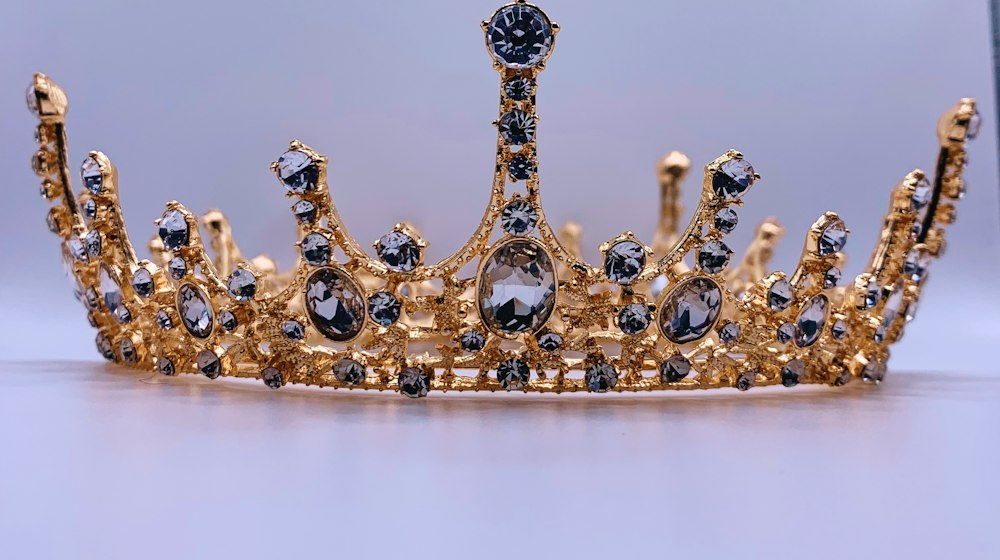

Government
The official website of Maspor
Scripture speaks plainly about rulers and nations. God ordains authority, we are to be subject and to pray for those in power — and above every throne, the LORD himself is King.
God sets up rulers
No ruler rises apart from God's appointment. He raises up and puts down, and the powers that be are ordained of him.
“And he changeth the times and the seasons: he removeth kings, and setteth up kings…”
Daniel 2:21 (KJB)
“The most High ruleth in the kingdom of men, and giveth it to whomsoever he will, and setteth up over it the basest of men.”
Daniel 4:17 (KJB)
“Let every soul be subject unto the higher powers. For there is no power but of God: the powers that be are ordained of God.”
Romans 13:1 (KJB)

Subject for conscience' sake
Believers are told to submit to lawful authority — not out of fear alone, but for the Lord's sake, as free servants of God.
“Submit yourselves to every ordinance of man for the Lord's sake: whether it be to the king, as supreme; or unto governors… for the punishment of evildoers, and for the praise of them that do well.”
1 Peter 2:13–14 (KJB)
“Honour all [men]. Love the brotherhood. Fear God. Honour the king.”
1 Peter 2:17 (KJB)
“Put them in mind to be subject to principalities and powers, to obey magistrates, to be ready to every good work.”
Titus 3:1 (KJB)
Render to all their dues
Christ himself drew the line: what belongs to earthly rulers is rendered to them, and what belongs to God is rendered to God. Tribute, custom, fear, and honour are debts owed.
“Render therefore unto Cæsar the things which are Cæsar's; and unto God the things that are God's.”
Matthew 22:21 (KJB)
“Render therefore to all their dues: tribute to whom tribute [is due]; custom to whom custom; fear to whom fear; honour to whom honour.”
Romans 13:7 (KJB)
Pray for those in authority
The first duty named for the gathered church is prayer — for kings and all in authority, that we may live peaceable lives.
“I exhort therefore, that, first of all, supplications, prayers, intercessions, [and] giving of thanks, be made for all men; for kings, and [for] all that are in authority; that we may lead a quiet and peaceable life in all godliness and honesty.”
1 Timothy 2:1–2 (KJB)
Righteousness exalteth a nation
A nation is measured not by its power but by its righteousness. Blessed is the nation whose God is the LORD.
“Righteousness exalteth a nation: but sin [is] a reproach to any people.”
Proverbs 14:34 (KJB)
“Blessed [is] the nation whose God [is] the LORD; [and] the people [whom] he hath chosen for his own inheritance.”
Psalm 33:12 (KJB)
The King above all
The LORD is King over all the earth
Every throne stands under a higher one. The kingdom belongs to the LORD, and his dominion is above all — a kingdom not of this world.
“The LORD hath prepared his throne in the heavens; and his kingdom ruleth over all.”
Psalm 103:19 (KJB)
“Thine, O LORD, [is] the greatness, and the power, and the glory, and the victory, and the majesty… thine [is] the kingdom, O LORD, and thou art exalted as head above all.”
1 Chronicles 29:11 (KJB)
“Jesus answered, My kingdom is not of this world: if my kingdom were of this world, then would my servants fight… but now is my kingdom not from hence.”
John 18:36 (KJB)
By me kings reign
Authority does not originate with men. Rulers and judges hold their seat by the leave of a higher wisdom, for God orders the affairs of nations and gives the kingdom to whom he will.
“By me kings reign, and princes decree justice.”
Proverbs 8:15 (KJB)
“By me princes rule, and nobles, [even] all the judges of the earth.”
Proverbs 8:16 (KJB)
How rulers are chosen
Scripture does not set the choosing of rulers by popular vote. Men are first qualified — proved able, fearing God, men of truth, hating covetousness — and then the choice is committed to the LORD by lot, that the disposing of it may be his alone. The people put forward the able; God, by the casting of the lot, makes the choice.
“Moreover thou shalt provide out of all the people able men, such as fear God, men of truth, hating covetousness; and place [such] over them, [to be] rulers of thousands, [and] rulers of hundreds, rulers of fifties, and rulers of tens.”
Exodus 18:21 (KJB)
“Take you wise men, and understanding, and known among your tribes, and I will make them rulers over you.”
Deuteronomy 1:13 (KJB)
“The lot is cast into the lap; but the whole disposing thereof [is] of the LORD.”
Proverbs 16:33 (KJB)
“And they gave forth their lots; and the lot fell upon Matthias; and he was numbered with the eleven apostles.”
Acts 1:26 (KJB)
When rulers command what God forbids
Subjection to rulers is never absolute. When the command of man contradicts the command of God, we obey God first — quietly, and at cost if need be. The three who would not bow to the image confessed their God was able to deliver them, and then added, “but if not.”
“Then Peter and the [other] apostles answered and said, We ought to obey God rather than men.”
Acts 5:29 (KJB)
“Whether it be right in the sight of God to hearken unto you more than unto God, judge ye.”
Acts 4:19 (KJB)
“If it be [so], our God whom we serve is able to deliver us… But if not, be it known unto thee, O king, that we will not serve thy gods, nor worship the golden image which thou hast set up.”
Daniel 3:17–18 (KJB)
Questions on government
Does Scripture tell us to obey rulers?
Yes. Believers are to submit to lawful authority for the Lord's sake — not from fear alone: “Let every soul be subject unto the higher powers. For there is no power but of God: the powers that be are ordained of God.” (Romans 13:1, KJB)
What if a ruler is unjust?
God still rules over all. He removeth kings, and setteth up kings (Daniel 2:21), and the most High giveth the kingdom to whomsoever he will (Daniel 4:17). When man's command contradicts God's, we obey God first: “We ought to obey God rather than men.” (Acts 5:29, KJB)
Must we pay taxes and honour the ruler?
Yes. Christ said, “Render therefore unto Cæsar the things which are Cæsar's; and unto God the things that are God's.” (Matthew 22:21, KJB) We render to all their dues — tribute, custom, fear, and honour (Romans 13:7).
Who is the highest authority of all?
The LORD. “The LORD hath prepared his throne in the heavens; and his kingdom ruleth over all.” (Psalm 103:19, KJB) Every throne stands under his.
How are rulers to be chosen?
Not by popular vote, but by election: a ruler must first be qualified — able, fearing God, a man of truth, hating covetousness (Exodus 18:21) — and then the choice is given to the LORD by lot, for “the lot is cast into the lap; but the whole disposing thereof [is] of the LORD.” (Proverbs 16:33, KJB)